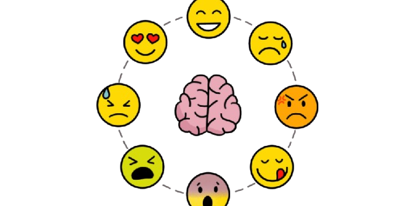

¿Por qué es importante conocer nuestras emociones?
Comprender lo que sentimos nos ayuda a tomar mejores decisiones, regular nuestro comportamiento y pedir ayuda cuando lo necesitamos. A continuación podrás aprender sobre las emociones más comunes y después realizar un cuestionario que te brindará consejos personalizados según tus respuestas.

Tabla de Emociones
| Emoción | Descripción | Imagen |
|---|---|---|
| Alegría | Sensación de bienestar, disfrute y energía positiva. | |
| Tristeza | Emoción natural que aparece al perder algo o sentir desánimo. | |
| Enojo | Reacción emocional ante situaciones injustas o frustrantes. | |
| Ansiedad | Preocupación constante o tensión respecto al futuro. | |
| Miedo | Emoción de alerta ante un riesgo real o imaginario. | |
| Sorpresa | Reacción rápida ante algo inesperado, puede ser positiva o negativa. | |
| Calma | Sensación de tranquilidad, equilibrio y control emocional. | |
| Vergüenza | Emoción que aparece cuando sentimos que otros juzgan nuestras acciones. | |
| Frustración | Molestia o desánimo cuando algo no sale como esperamos. | |
| Gratitud | Reconocimiento y aprecio por las cosas buenas que recibimos. |
Información sobre el cuestionario
Fundamento
El cuestionario de autoevaluación emocional es una herramienta que ayuda a reflexionar sobre cómo nos sentimos en diferentes situaciones. Su finalidad es apoyar el reconocimiento de las emociones propias y fomentar el autoconocimiento. Al responderlo con sinceridad, los alumnos pueden identificar su emoción predominante y recibir orientaciones, consejos y mensajes motivacionales. Este recurso no tiene fines de evaluación académica ni psicológica, sino educativos, y busca promover la expresión emocional sana, la empatía y el bienestar dentro de la comunidad escolar.
Cuestionario de Autoevaluación por Emoción
Responde cada bloque. Cada pregunta tiene 4 opciones: Nunca (0) / A veces (1) / Frecuentemente (2) / Siempre (3).